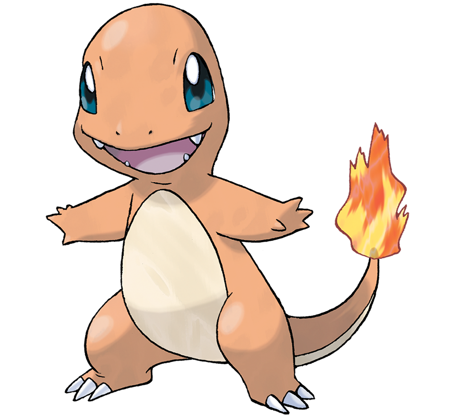

LAS CANCHAS ⚽


Hola a todos! Me llamo Jon Andoni, aunque la mayoría me conoce como Andowna9 debido a mi canal de YouTube. He decidido crear este pequeño blog para dirigirme a mis suscriptores, amigos y conocidos de una forma más personal, principalmente con la intención de que dispongáis de contenido adicional.
Entre mis principales hobbies se encuentra jugar al fútbol, ya que me permite establecer vínculos con otras personas fácilmente al tratarse de un deporte en equipo. Sin embargo, he de reconocer que no siempre he pensado así y de pequeño no le encontraba la gracia (además, tampoco es que fuera muy bueno). Por otro lado, y como muchos sabréis, amo pasar el tiempo jugando a videojuegos siempre que encuentro un hueco en mi atareado horario, intentando coincidir con mis amigos en la medida de lo posible. Por último, en los últimos años he empezado a ver animes (dibujos animados japoneses) populares y teniendo en cuenta que desde pequeño me ha encantado el estilo de dibujo que utilizan, me he vuelto un aficionado de la cultura japonesa.
Generalmente, me considero una persona muy introvertida, es decir, no soy un aficionado a las discotecas como la mayoría de las personas, sino que suelo preferir hacer planes con gente cercana o quedarme en casa viendo series. También cabe destacar que tiendo a ser excesivamente perfeccionista con aquellas cosas que me importan, lo cual a veces puede ser un auténtico dolor de muelas!


| Lunes | Martes | Miércoles | Jueves | Viernes | Sábado | Domingo |
|---|---|---|---|---|---|---|
| Descanso | Descanso | Descanso | Descanso | Vídeo | Directo | Descanso |